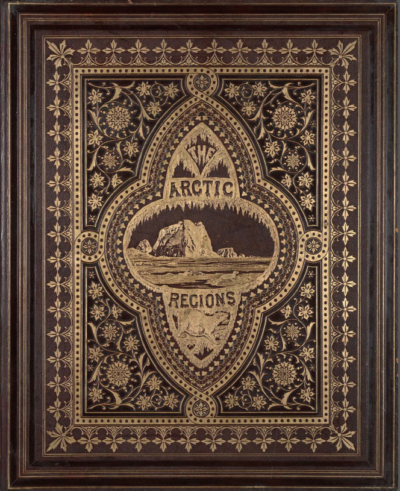

In the summer of 1869, the American marine painter William Bradford began an unprecedented journey to the Arctic. While others had ventured into the region before him, Bradford’s expedition from Boston, Massachusetts to the western coast of Greenland was the first of its kind planned solely for the purposes of art.
Rather than national pride or scientific research, Bradford’s motivation for this perilous trip was to make pictures. He intended to sketch, photograph, and write about the extreme, enchanting landscape that had become an obsession in Anglo-American culture. Bradford, already a celebrated painter of icebergs, hired two Boston-based photographers, John Dunmore and George Critcherson to join the expedition. The photographs they produced were later edited and compiled in a rare and extravagant photographic book, titled The Arctic Regions: Illustrated with Photographs Taken on an Art Expedition to Greenland.
“Tracing The Arctic Regions” is a digital humanities project that considers this historic journey, the 140 photographs that document it, and how they shaped understanding of Arctic space and time. In doing so, this site also explores a central motif of The Arctic Regions: the contrast between what we can pinpoint on a map and what remains adrift in space and history. Developed at the Center for Spatial and Textual Analysis (CESTA), the project grew out of doctoral research in the Department of Art & Art History at Stanford University.
Representations of the Arctic, a landscape defined by strange light and shifting features, have always reflected these challenges to representation. Earlier Arctic explorers often indulged in fantastic verbal flourishes; their drawings were ill-equipped to capture both intricate details and dynamic changes in the ice. By using “instantaneous photographs”--technology that led to shorter exposure times around the book’s 1873 publication--The Arctic Regions promised to make the polar north accessible in unprecedented ways. With its large “royal broadsize” format of 25 by 20 inches, The Arctic Regions combined text and photographs at an immersive scale.
Yet for all these technological advancements, The Arctic Regions lacks one of the oldest and clearest ways of representing space: the book contains no map. It is a perplexing omission. For a landscape so vast and so repetitive in its shapes, the Arctic would seem to present an ideal case for a map, if only a cursory one. In fact, Bradford would include maps of his journey in lantern slide illustrated lectures in the later 1870s. Why would he (or his publishers) decide against it in the book?
As an exercise in spatial history--the collaborative, digital exploration of the past with a conceptual focus on space--this project attempts to explain this absence of a map by creating a new one. Using modern digital tools, Tracing The Arctic Regions plots the path of the ship Panther along the coast of Greenland and, where possible, identifies the location of specific photographs within that space. Following the course of the Panther through Bradford’s text and Dunmore and Critcherson’s photographs, we can thus “trace” the path of The Arctic Regions. Besides filling a void left in historical documents, this project of tracing also aims to reveal the influence of the Arctic on nineteenth-century American thought.
While Tracing The Arctic Regions gives greater clarity to what is known, it also acknowledges what geographic details remain unclear. While many photographs in the book correspond to known places that can be expressed as points on a map, many others remain mysteries, like icebergs that drift and melt away.
Using dynamic cartography, this site attempts to mirror the ambiguity of Arctic landscapes, which are both monolithic and ephemeral. The following essays and interactive map portray the sway between known and unknown that defined this space for in the nineteenth-century mind, an oscillation that continues in different ways today.
